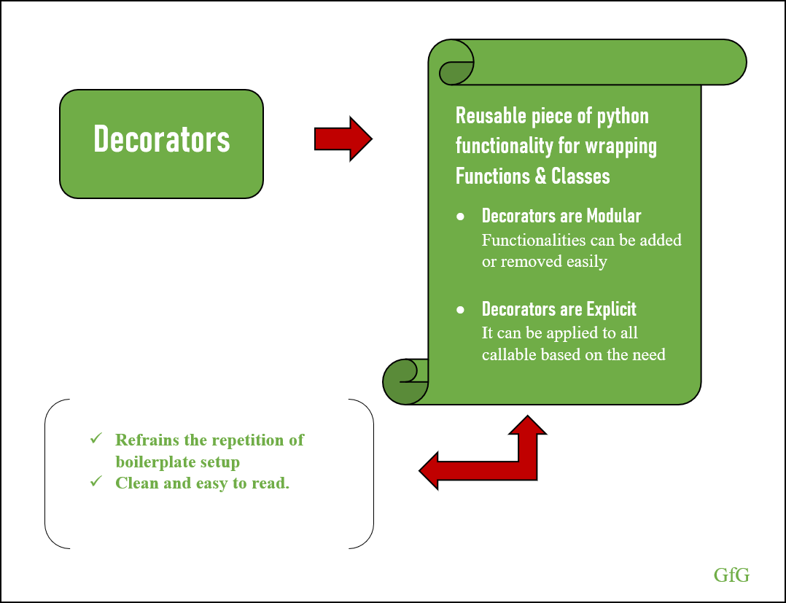
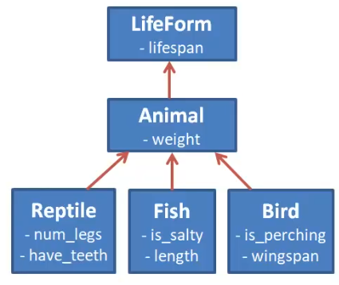

OOP 2: Class Methods, Class Variables & Object Relationships
✅ Objectives
- Learn about decorators
- what are they?
- how are they useful in Python classes?
- Python’s “pie” syntax
- Understand class variables
- how to define and update their value
- Write class methods
- use the
@classmethoddecorator clskeyword
- use the
- Object inheritance
- how is it useful?
- inherited or overwritten?
- calling
super()
- Build one-to-many relationships between objects
- Discuss their importance and use
- Emphasize single-source-of-truth
- Demonstrate building one-way and two-way relationships
- Build many-to-many relationships between objects
- Discuss their importance and use
- Demonstrate building the relationship with and without intermediary class
- Aggregate Methods
- Write aggregate methods to collect data about objects using their related objects
What are decorators? 🪴 🛋️
Decorators give us an easy way to extend a method's functionality without altering the method.

Decorators are higher-order functions

They take in a function as an argument, and return a function.
The "pie", @decorator, syntax makes decorators easier to implement in our code.
Let’s try it! 🏈
Class Variables

We have used instance variables (attributes) to assign unique values to instances of a class. How could we assign a univeral value which would be the same for all instances?

Every object instantiated from the class has read and write access to its class variables.
class Pet:
total_pets = 0
all = []
- class variables are espcially useful for tracking cumulative data about all of the objects instantiated
- a list can even be used to keep a reference to every object itself!
Class Methods
What about behaviors that are universal to the class?

class Pet:
total_pets = 0
all = []
@classmethod
def add_to_total_pets(cls):
cls.total_pets += 1
Pet.add_to_total_pets()
- Just as we can give a class attributes with class variables, we can also give it behavior with class methods.
- these methods often update the values of the class variables in some way
Let's get hacking! 🕶️
Object Inheritance

- Just as we've extended the functionality of methods with decorators
- We can extend the functionality of a class with inheritance
- Inheritance let's us create a family of classes which share traits
- While still keeping our code DRY
Heirarchical inheritance with common and differentiated attributes

Method overriding
class Vehicle:
def vehicle_info(self):
print("Inside Vehicle Class")
def max_speed(self):
print("max speed is 100 Km/Hour")
class Car(Vehicle):
def car_info(self):
print("Inside Car Class")
# overridden the implementation of Vehicle class
def max_speed(self):
print("max speed is 200 Km/Hour")
# Creating object of Car class
car = Car()
car.vehicle_info() # => "Inside Vehicle Class"
car.car_info() # => "Inside Car Class"
car.max_speed() # => "max speed is 200 Km/Hour"
super() method
The super function returns a temporary object of the parent class that allows us to call a parent class method inside a child class method.
Benefits of using the super() function
- We are not required to remember or specify the parent class name to access its methods.
- We can use the
super()function in both single and multiple inheritances. - The
super()function support code reusability as there is no need to write the entire function
class Company:
def company_name(self):
return 'Google'
class Employee(Company):
def info(self):
# Calling the superclass method using super()function
c_name = super().company_name()
print("Jessa works at", c_name)
# Creating object of child class
emp = Employee()
emp.info()
Let’s do it! 🏃♂️


- A sale may have multiple coupons but a coupon can only be used on one sale at a time.
- A person can have one or more family members, a family can have any number of people.
- A book is assigned to one library at a time but a library holds a bunch of books
- A fan can go to multiple concerts and a concert can have multiple fans